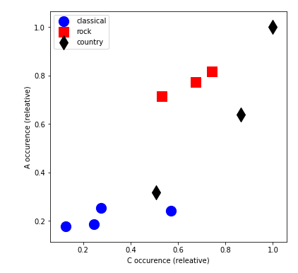

Task 1 Captures

Task 2 Analysis
Original


Redone


Analysis
The redone score has managed to detect the BPM of the original along with some patterns in the representation. However, it is mostly different from the original in notation and by the way it sounds. This means that automatic transcription is not reliable and should be carefully examined prior to implementation. Furthermore, additional research should be carried out in order to enhance the automatic transcription process with the possible use of machine learning.